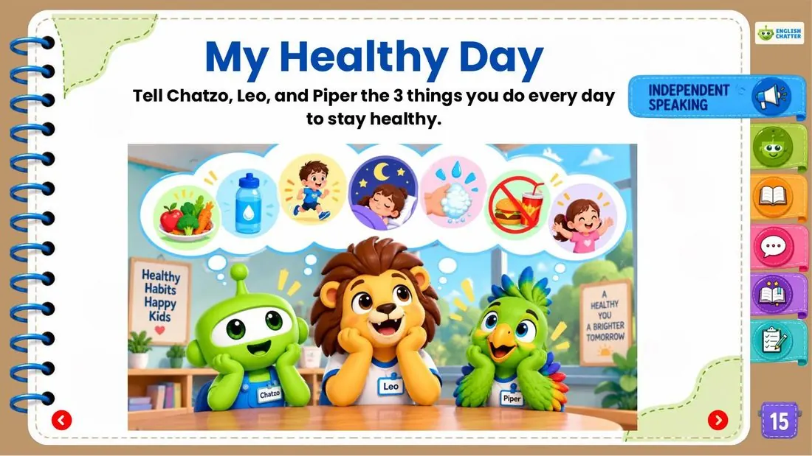
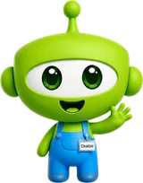
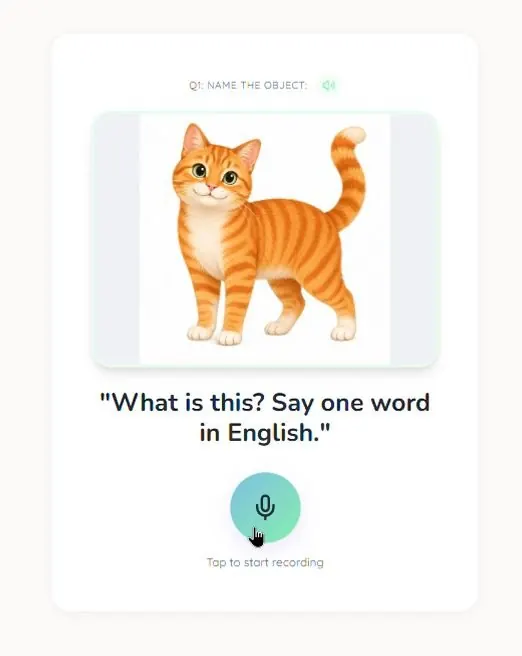
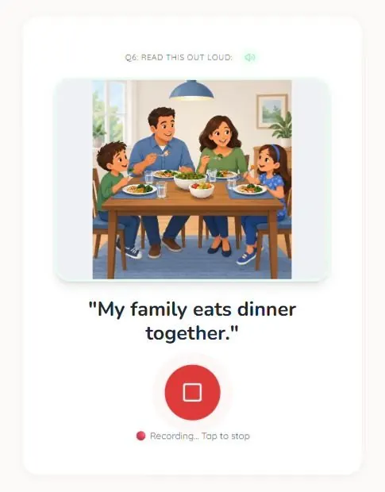
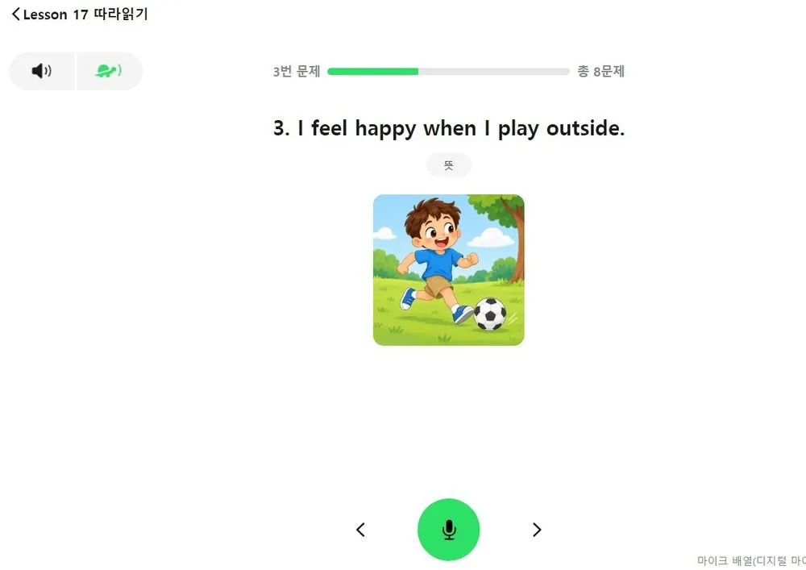
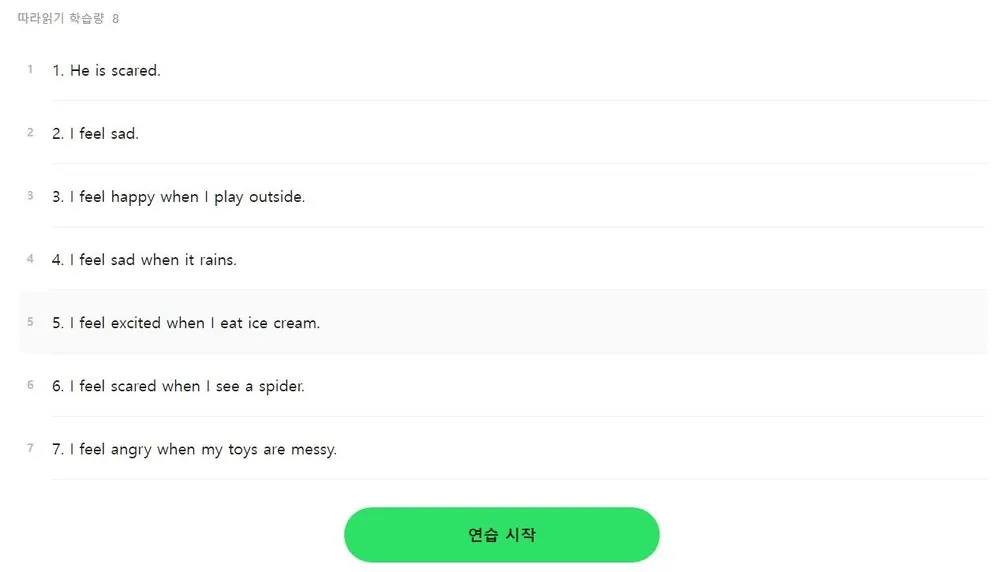

유치부 · 초등학생을 위한 1:1 원어민 화상영어
말하는 영어,
한 레벨씩 자라요
레벨마다 90일. 잉글리시채터가 직접 만든 디지털 교재로, 아이가 매 수업 직접 영어로 말해요.


실제 수업에 사용하는 디지털 교재 화면 예시입니다.
우리 아이에게 맞는
레벨부터 시작해요
CEFR(유럽 공통 언어 참조 기준)을 참고해 자체 개발한 말하기 중심 커리큘럼이에요. 시작 레벨은 AI 말하기 진단과 무료체험으로 안내해 드려요.
한 번의 수업은
이렇게 이어져요
수업 전 예습부터 25분 1:1 수업, 수업 후 복습까지. 단계마다 아이가 직접 영어로 말해요.
-
1수업 전 · 예습
AI 말하기 진단으로
미리 말해봐요그림 또는 질문을 보고 답하거나 문장을 읽으며, 수업에서 만날 단어와 표현을 미리 익히며 준비해요.

그림 보고 답하기 
문장 읽고 말하기 실제 수업에 사용하는 디지털 교재 화면 예시입니다.
-
225분 1:1 수업
선생님과 함께
직접 말해요수업 단계가 차례로 넘어가며 실제 수업 화면을 보여드려요.
실제 수업에 사용하는 디지털 교재 화면 예시입니다.
-
3수업 후 · 복습
말하기 활동으로
다시 연습해요수업에서 배운 표현 중 피드백을 받은 단어나 문장을 듣고 따라 말하며 녹음해요. 그림과 문장을 보며 배운 내용을 한 번 더 말해봐요.

듣고 따라 말하기 
복습할 표현 확인
7번의 수업 후, 한 번의 리뷰 수업.
배운 표현을 다시 사용해 보고, 튜터의 피드백과 성장 리포트를 통해 아이의 학습 과정을 함께 확인합니다.
아이의 말문을 여는
잉글리시채터 선생님
1:1 수업으로 선생님이 25분 동안 오롯이 우리 아이에게 집중해요. 정답을 바로 알려주기보다 아이가 스스로 생각하고 말할 수 있도록 이끌어주며, 작은 시도에도 아낌없이 칭찬해요.
수업 중 대화, 이렇게 이어져요
아이의 속도를 기다려줘요
대답이 바로 나오지 않아도 재촉하지 않아요. 힌트를 주며 아이가 스스로 말할 때까지 기다려요.
완전한 문장으로 이끌어요
단답으로 끝나지 않도록 질문을 이어가며, 한 단어가 한 문장이 되도록 도와요.
칭찬으로 자신감을 키워요
틀려도 먼저 시도한 것을 칭찬하고, 바른 표현은 다시 말해보며 자연스럽게 익혀요.
우리 아이 눈높이에 맞춰요
아이의 레벨과 관심사에 맞춰 말의 속도와 표현을 조절하며 대화해요.
한 레벨, 90일 동안
이렇게 달라져요
1개월
자신감의 시작
새로운 수업에 적응하며, 영어로 직접 말해보는 경험을 쌓아요.
2개월
작은 변화
질문에 먼저 답하려는 시도가 늘고, 영어 표현이 한층 자연스러워져요.
3개월
자신감의 성장
영어로 말하는 데 자신감이 붙고, 대화를 더욱 즐기게 돼요.